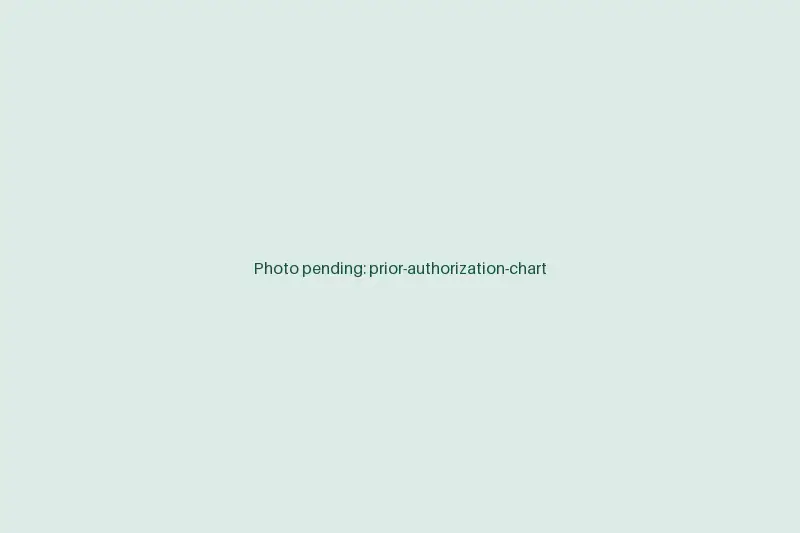

Prior authorization services that keep procedures on the calendar
A missing auth can push a surgery or scan back by weeks, and chasing payers eats hours your nurses don't have. Our remote auth specialists submit, follow up and appeal until there's a decision, then log it where your schedulers will see it.
Book a discovery callAt a glance
- Works in
- Your EMR, payer portals, CoverMyMeds and e-fax
- Covers
- Imaging, procedures, surgery, DME and specialty drugs
- Logs
- Auth number, approved units and valid dates on the order
- Starts
- About two weeks from kickoff

What the auth team handles, start to finish
You keep clinical judgment and signatures. We handle everything around them.
Requirement check
Confirm whether the payer requires an auth for the CPT codes on the order, so nothing is missed or sent needlessly.
Clinical packet
Pull the notes, imaging and medication history the payer's criteria ask for and attach them to the request.
Submission
Submit through the payer portal, CoverMyMeds, phone or fax, whichever that payer answers fastest.
Scheduled follow-up
Check pending requests on a fixed rhythm and answer requests for more information the day they arrive.
Peer-to-peer booking
Put peer-to-peer reviews on the physician's calendar with a one-page case summary ready.
Denials and appeals
Draft appeal letters from the chart for physician sign-off and track each one to a decision.
How we take over your auth queue
We start with what's already open, because that's where the scheduling pain is.
- Days 1 to 3
Review the backlog
We look at open requests, your highest-volume payers and where auths stall today.
- Days 4 to 6
Agree the hand-offs
Decide how orders reach us (EMR task, work queue or order status) and who signs clinical letters.
- Week 2
Supervised first requests
Our specialist works live requests with your lead watching, then takes the queue.
- Go-live
Daily status
Every open auth has a status, a next follow-up date and an owner your schedulers can see.
What your team gets back
The work doesn't go away. It moves to people whose whole day is authorizations.
For your practice
- Procedures scheduled with approvals in hand instead of moved at the last minute.
- Nurses and MAs back on clinical work.
- Fewer write-offs for services done without a valid auth. [STAT: e.g. auth-related write-offs before and after]
- A single list showing every pending request and its age.
For your patients
- Treatment dates they can plan work and childcare around.
- Fewer calls asking whether insurance has approved it yet.
- Quicker answers when a drug needs step therapy or an exception.
The chart stays in your EMR
Prior auths need clinical records, so the access rules matter more here than anywhere.
- Work happens in your EMRSpecialists read notes and attach records inside your EMR and the payer portals. The chart never leaves.
- Nothing saved on our sideNo local copies of notes, images or letters on staff workstations.
- Printing and downloads blockedStaff machines can't print, download files or use USB drives.
- Named, revocable accessEvery specialist uses a personal login you issue and can disable at any time.
- Signed BAAThe Business Associate Agreement is signed before the first login.
Prior authorization FAQs
What do prior authorization services cost?
A flat monthly rate based on the specialist hours your request volume needs. There's no per-auth fee, so a heavy month doesn't raise the bill. You get a written quote after the discovery call.
Do your specialists work with our EMR and payer portals?
Yes. They work in your EMR (Epic, athenahealth, eClinicalWorks, ModMed, NextGen and others), plus Availity, CoverMyMeds, payer-specific portals and your e-fax inbox.
How quickly are requests submitted?
The same business day the order and supporting notes are complete. Urgent requests go out as soon as they reach the queue, and pending ones are followed up on a schedule we agree with you.
How do you protect PHI when handling authorizations?
Everything happens inside your systems under a signed BAA. Staff use named logins, can't print or download, and keep nothing on their machines. Your EMR's audit log shows every chart they open.
Can the team cover our time zone and late orders?
Yes. Shifts follow your time zone, and we can stagger hours so orders placed late in clinic are submitted the same day.
Hand us the auth queue
Send a snapshot of your open requests and top payers. We'll show you how we'd work them and what it would take to staff.
Book a discovery call